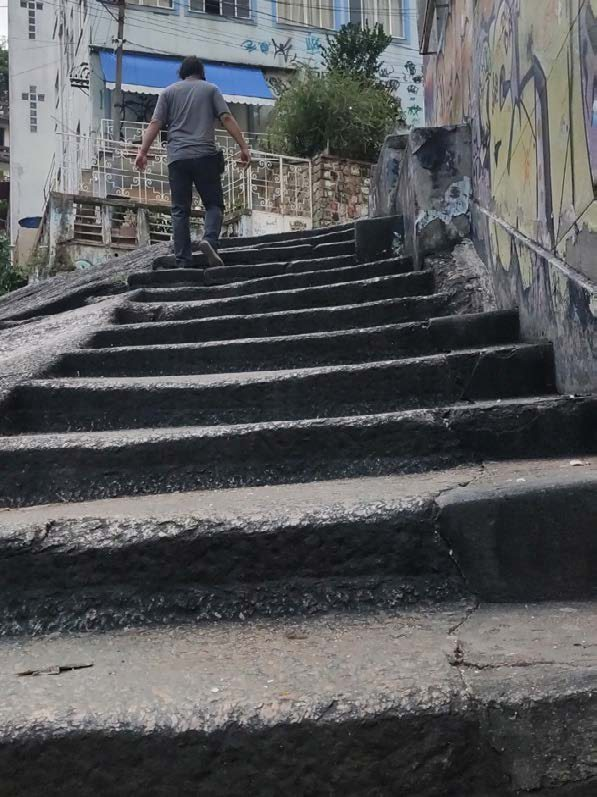
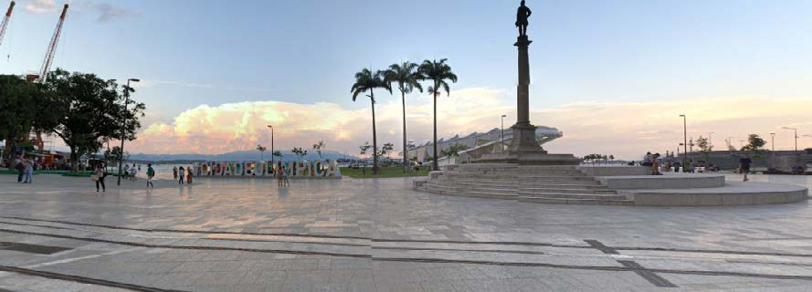

Cidade Sensível
Registro sonoro em preparação.


A cidade tem camadas sonoras, históricas, de experiência vivida. Em três caminhadas pelo centro do Rio durante a pandemia — Cinelândia, Pedra do Sal, Praça Mauá — o artista narra o que vê e escuta, sobre o som ambiente gravado em cada lugar.
- Materiais
- Obra sonora em três partes: Cinelândia, Pedra do Sal e Praça Mauá; podcast
- Local
- Rio de Janeiro; gravações de 20 de fevereiro de 2021
- Exposição
- Cidade Labirinto (2021)